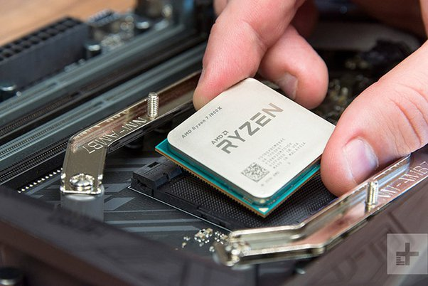

.png)
За какво служи централният процесор?
Процесорът е ключов компонент в компютърната система и играе решаваща роля в изпълнението на различни задачи. Ето основните функции и роли, които изпълнява централният процесор:
- Изпълнение на Инструкции : ЦП обработва инструкции, предоставени от софтуерните програми. Това включва широк спектър от операции, като аритметични и логически операции, премествания на данни и управление на програмен поток.
- Управление на Ресурсите: ЦП контролира и управлява другите хардуерни компоненти в компютъра. Това включва взаимодействието с паметта, управлението на входно-изходни устройства и управлението на системните ресурси.
- Изпълнение на Програми:ЦП изпълнява програми, които се зареждат в паметта на компютъра. Това включва операционната система, приложения и друг софтуер.
- Управление на Ядрата (Cores): Съвременните централни процесори обикновено разполагат с множество ядра (multi-core), които позволяват на компютъра да обработва няколко задачи паралелно. Това подобрява общата производителност и отзивчивост на системата.
- Управление на Тактовата Честота (Clock Speed):Тактовата честота определя колко бързо процесорът може да изпълнява инструкции за определен период от време. По-висока тактова честота обикновено води до по-добра производителност, но и други фактори, като броя на ядрата, са също важни.
- Координация на Работата на Системата: ЦП играе важна роля в координирането на работата на всички компоненти в компютърната система. Този координационен елемент осигурява, че различните части на системата работят заедно в хармония.
